Candidate List 20260720Last night — ZTF: 856 passed basic cuts (34 young) · LSST: 0 passed basic cuts (0 young)Previous Day Next Day
Section 1: New Sources (age<1d) Section 2: Old (1-5d) sources observed last nightplaceholder
Section 2: Older Sources Observed Last Night (7)
0. [ZTF] ZTF26abhgsjx (FBOT?) [Back to Top] [Share] [Trigger Swift] [Fritz Alert] [Fritz Source] [Lasair]RA, Dec: 205.41475, 44.90473 13h41m39.54s, 44d54m17.04sGalactic (l, b): 96.74098, 69.58337 ext(g-r) = 0.02


TESS: Sectors [ 16 22 23 49 76 121]
SDSS (<15 kpc):Found SDSS phot-z: z=0.15; peak abs mag = -20.46
PS1: 0 sources in 3 arcsec
LegacySurvey: 1 sources in 3 arcsec Closest: d = 0.06 arcsec, 299.6 deg (east of north) photoz=0.18 (68% bounds 0.1, 0.35), type=DEV peak abs mag = -20.73 (68% bounds -19.27, -22.43)

Rise Rate:
g: 0.31 mag/day
Fade Rate:
1. [ZTF] ZTF26abhgrfh (FBOT?) [Back to Top] [Share] [Trigger Swift] [Fritz Alert] [Fritz Source] [Lasair]RA, Dec: 226.06931, 7.78022 15h 4m16.64s, 7d46m48.78sGalactic (l, b): 7.54579, 53.0824 ext(g-r) = 0.032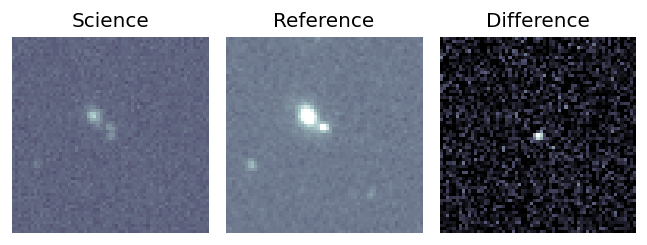
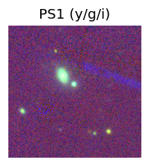
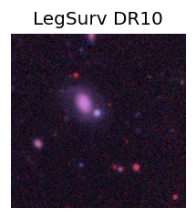
TESS: Sectors 51
NED (10 arcsec):Found NED spec-z: z=0.08; peak abs mag = -18.65
PS1: 0 sources in 3 arcsec
LegacySurvey: 1 sources in 3 arcsec Closest: d = 3.05 arcsec, 10.7 deg (east of north) photoz=0.33 (68% bounds 0.06, 0.91), type=PSF peak abs mag = -21.86 (68% bounds -17.8, -24.53)
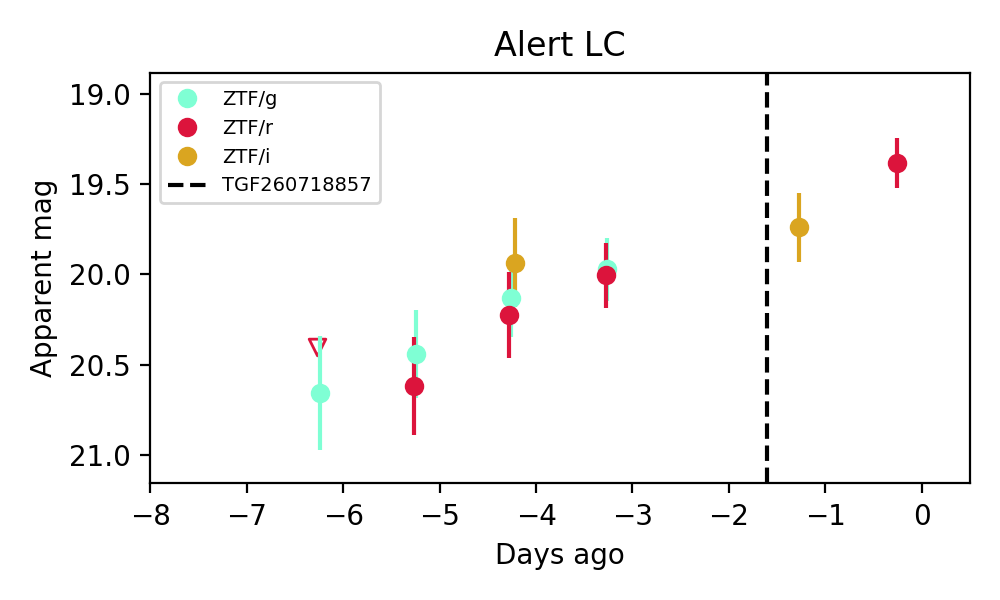
Extinction-corrected gr color:
From alerts: -0.06 +/- 0.25 mag
Extinction-corrected gi color:
From alerts: 0.14 +/- 0.33 mag
Extinction-corrected ri color:
From alerts: 0.27 +/- 0.34 mag
Consistent with synchrotron, g-r>0!
Rise Rate:
g: 0.23 mag/day
r: 0.23 mag/day
Fade Rate:
2. [ZTF] ZTF26abhxtux (FBOT?) [Back to Top] [Share] [Trigger Swift] [Fritz Alert] [Fritz Source] [Lasair]RA, Dec: 238.67983, 77.09977 15h54m43.16s, 77d 5m59.17sGalactic (l, b): 111.56719, 35.65805 ext(g-r) = 0.046


TESS: Sectors [ 14 15 19 20 21 22 25 26 40 41 47 48 49 52 53 59 60 73
74 75 76 79 80 82 86 117 119 120 121]
PS1: 0 sources in 3 arcsec
LegacySurvey: 1 sources in 3 arcsec Closest: d = 0.74 arcsec, 318.0 deg (east of north) photoz=0.14 (68% bounds 0.09, 0.19), type=REX peak abs mag = -19.36 (68% bounds -18.21, -20.04)

Extinction-corrected gr color:
From alerts: -0.28 +/- 0.24 mag
Rise Rate:
g: 0.22 mag/day
r: 0.17 mag/day
Fade Rate:
3. [ZTF] ZTF26abihttu (Afterglow?) [Back to Top] [Share] [Trigger Swift] [Fritz Alert] [Fritz Source] [Lasair]RA, Dec: 213.28521, 43.39921 14h13m8.45s, 43d23m57.15sGalactic (l, b): 82.82104, 66.82243 ext(g-r) = 0.01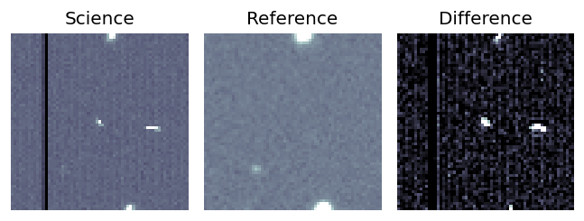
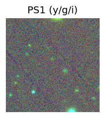
TESS: Sectors [16 23 49 50 76 77]
SDSS (<15 kpc):Found SDSS phot-z: z=0.41; peak abs mag = -23.39
PS1: 0 sources in 3 arcsec
LegacySurvey: 1 sources in 3 arcsec Closest: d = 3.63 arcsec, 11.8 deg (east of north) photoz=0.89 (68% bounds 0.78, 1.04), type=REX peak abs mag = -25.41 (68% bounds -25.06, -25.82)
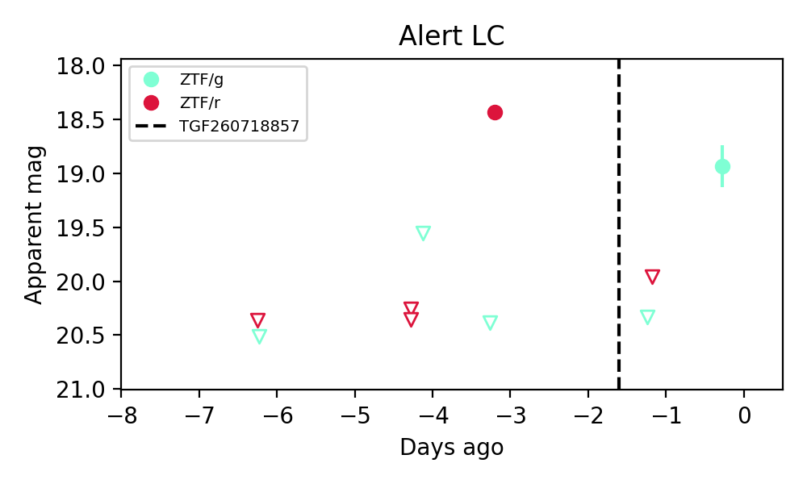
Extinction-corrected gr color:
From alerts: 1.94 +/- 99 mag
Rise Rate:
g: 1.45 mag/day
r: 1.78 mag/day
Fade Rate:
r: 0.75 mag/day
4. [ZTF] ZTF26abihuik (FBOT?) [Back to Top] [Share] [Trigger Swift] [Fritz Alert] [Fritz Source] [Lasair]RA, Dec: 187.2516, 8.65234 12h29m0.39s, 8d39m8.43sGalactic (l, b): 285.8688, 70.77729 ext(g-r) = 0.024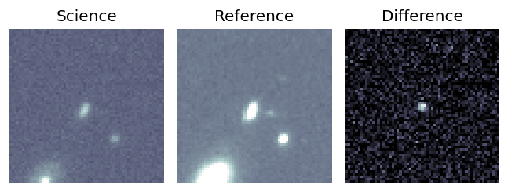
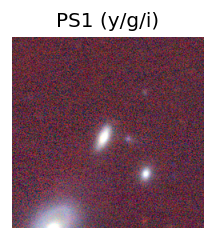
TESS: Sectors [ 23 46 49 91 115]
NED (10 arcsec):Found NED spec-z: z=0.13; peak abs mag = -18.98
PS1: 0 sources in 3 arcsec
LegacySurvey: 1 sources in 3 arcsec Closest: d = 0.83 arcsec, 74.6 deg (east of north) photoz=0.26 (68% bounds 0.19, 0.4), type=REX peak abs mag = -20.55 (68% bounds -19.77, -21.69)
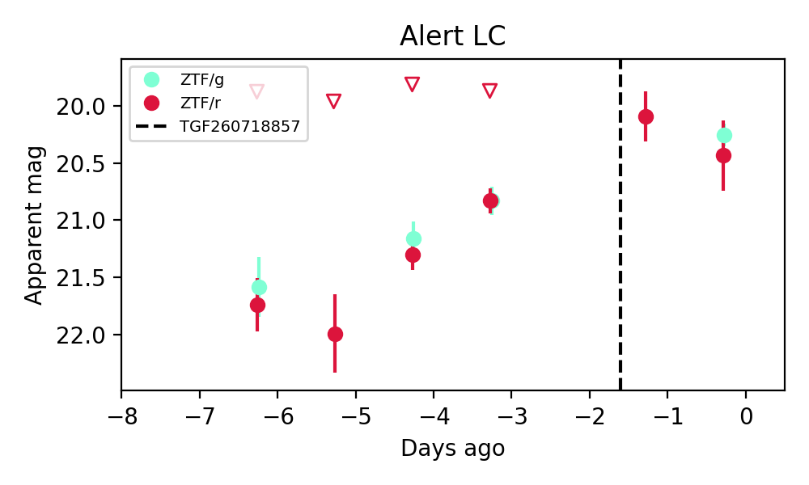
Extinction-corrected gr color:
From alerts: -0.2 +/- 0.32 mag
Extinction-corrected gi color:
From alerts: 0.66 +/- 99 mag
Extinction-corrected ri color:
From alerts: 0.07 +/- 99 mag
Consistent with synchrotron, g-r>0!
Rise Rate:
g: 0.22 mag/day
r: 0.31 mag/day
Fade Rate:
5. [ZTF] ZTF26abiifbn (FBOT?) [Back to Top] [Share] [Trigger Swift] [Fritz Alert] [Fritz Source] [Lasair]RA, Dec: 263.96895, 45.21866 17h35m52.55s, 45d13m7.17sGalactic (l, b): 71.30502, 31.77781 ext(g-r) = 0.028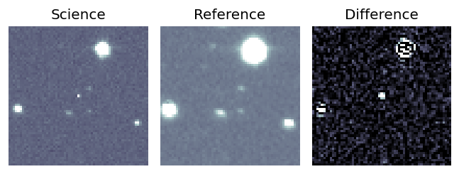
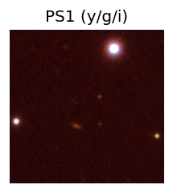
TESS: Sectors [ 25 26 40 51 52 53 79 80 117 118]
SDSS (<15 kpc):Found SDSS phot-z: z=0.56; peak abs mag = -22.93
PS1: 0 sources in 3 arcsec
LegacySurvey: 1 sources in 3 arcsec Closest: d = 1.94 arcsec, 40.4 deg (east of north) photoz=0.72 (68% bounds 0.55, 0.91), type=REX peak abs mag = -23.53 (68% bounds -22.79, -24.13)
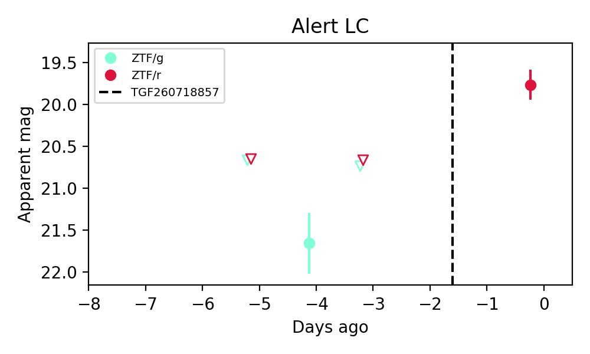
Rise Rate:
r: 0.3 mag/day
Fade Rate:
6. [ZTF] ZTF26abiihhx (FBOT?) [Back to Top] [Share] [Trigger Swift] [Fritz Alert] [Fritz Source] [Lasair]RA, Dec: 279.5462, 9.67966 18h38m11.09s, 9d40m46.78sGalactic (l, b): 40.09415, 7.31786 ext(g-r) = 0.321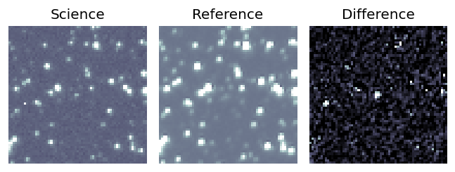
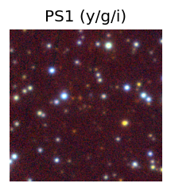
TESS: Sectors [ 80 118]
PS1: 1 source in 3 arcsec Closest: d = 1.11 arcsec photoz=0.25+/-0.13 peak abs mag = -21.44
LegacySurvey: 0 sources in 3 arcsec
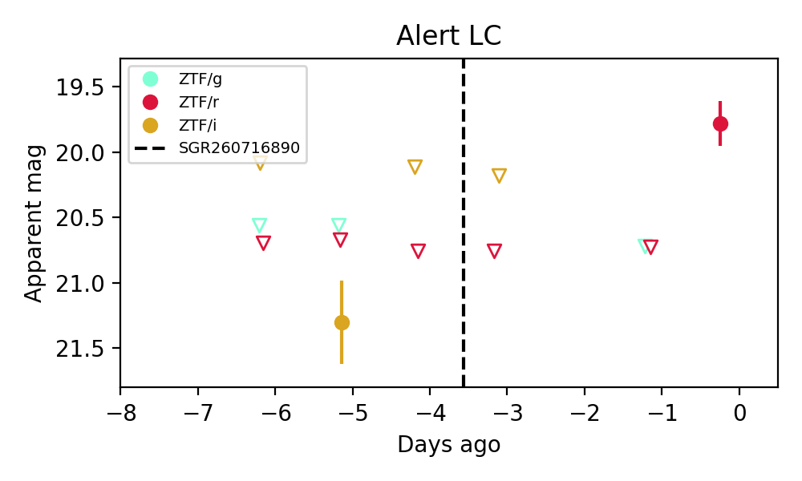
Extinction-corrected gi color:
From alerts: -1.24 +/- 99 mag
Extinction-corrected ri color:
From alerts: -0.81 +/- 99 mag
Rise Rate:
r: 1.04 mag/day
Fade Rate: